7. Evaluation et optimisation¶
L’objectif de ce chapitre est de montrer comment un SGBD analyse, optimise et exécute une requête. SQL étant un langage déclaratif dans lequel on n’indique ni les algorithmes à appliquer, ni les chemins d’accès aux données, le système a toute latitude pour déterminer ces derniers et les combiner de manière à obtenir les meilleures performances.
Le module chargé de cette tâche, l’optimiseur de requêtes, tient donc un rôle extrêmement important puisque l’efficacité d’un SGBD est fonction, pour une grande part, du temps d’exécution des requêtes. Ce module est complexe. Il applique d’une part des techniques éprouvées, d’autre part des heuristiques propres à chaque système. Il est en effet reconnu qu’il est très difficile de trouver en un temps raisonnable l’algorithme optimal pour exécuter une requête donnée. Afin d’éviter de consacrer des resources considérables à l’optimisation, ce qui se ferait au détriment des autres tâches du système, les SGBD s’emploient donc à trouver, en un temps limité, un algorithme raisonnablement bon.
La compréhension des mécanismes d’exécution et d’optimisation fournit une aide très précieuse quand vient le moment d’analyser le comportement d’une application et d’essayer de distinguer les goulots d’étranglements. Comme nous l’avons vu dans les chapitres consacrés au stockage des données et aux index, des modifications très simples de l’organisation physique peuvent aboutir à des améliorations (ou des dégradations) extrêmement spectaculaires des performances. Ces constatations se transposent évidemment au niveau des algorithmes d’évaluation : le choix d’utiliser ou non un index conditionne fortement les temps de réponse, sans que ce choix soit d’ailleurs évident dans toutes les circonsstances.
S1: Introduction à l’optimisation et à l’évaluation¶
Supports complémentaires:
Commençons par situer le problème. Nous avons une requête, exprimée en SQL, soumise au système. Comme vous le savez, SQL permet de déclarer un besoin, mais ne dit pas comment calculer le résultat. C’est au système de produire une forme opératoire, un programme, pour effectuer ce calcul (Fig. 7.1), . Notez que cette approche a un double avantage. Pour l’utilisateur, elle permet de ne pas se soucier d’algorithmique d’exécution. Pour le système elle laisse la liberté du choix de la meilleure méthode. C’est ce qui fonde l’optimisation, la liberté de déterminer la manière de répondre a un besoin.
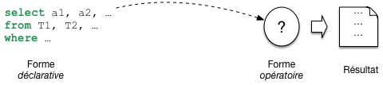
Fig. 7.1 Les requêtes SQL sont déclaratives¶
En base de données, le programme qui évalue une requête a une forme très particulière. On l’appelle plan d’exécution. Il a la forme d’un arbre constitué d’opérateurs qui échangent des données (Fig. 7.2). Chaque opérateur effectue une tâche précise et restreinte: transformation, filtrage, combinaisons diverses. Comme nous le verrons, un petit nombre d’opérateurs suffit a évaluer des requêtes, même très complexes. Cela permet au système de construire très rapidement, a la volée, un plan et de commencer a l’exécuter. La question suivante est d’étudier comment le système passe de la requête au plan.
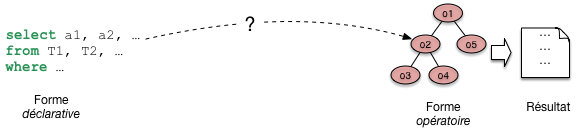
Fig. 7.2 De la requête SQL au plan d’exécution.¶
Le passage de SQL a un plan s’effectue en deux étapes, que j’appellerai a) et b (Fig. 7.3). Dans l’étape a) on tire partie de l’équivalence entre SQL, ou une grande partie de SQL, avec l’algèbre. Pour toute requête on peut donc produire une expression de l’algèbre. Une telle expression est déjà une forme opérationnelle, qui nous dit quelles opérations effectuer. Nous l’appellerons plan d’execution logique. Une expression de l’algèbre peut se représenter comme un arbre, et nous sommes déjà proches d’un plan d’exécution. Il reste cependant assez abstrait.
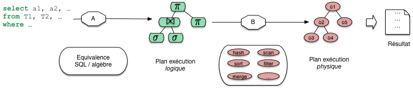
Fig. 7.3 Les deux phases de l’optimisation¶
Dans l’étape b) le système va choisir des opérateurs particulièrs, en fonction d’un contexte spécifique. Ce peut être là présence ou non d’index, la taille des tables, la mémoire disponible. Cette étape b) donne un plan d’exécution physique, applicable au contexte.
Reste la question de l’optimisation. Il faut ici élargir le schéma: à chaque étape, a) ou b), plusieurs options sont possibles. Pour l’étape a), c’est la capacité des opérateurs de l’algèbre à fournir plusieurs expressions équivalentes. La Fig. 7.4 montre par exemple deux combinaisons possibles issues de la même requête sql. Pour l’étape b) les options sont liées au choix de l’algorithmique, des opérateurs à exécuter.
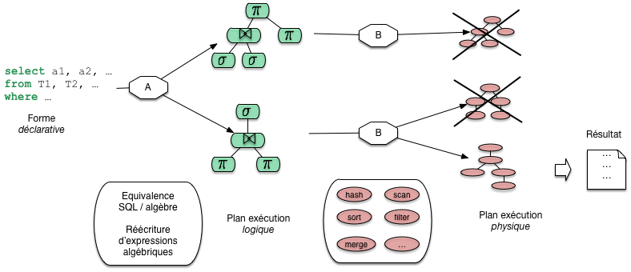
Fig. 7.4 Processus général d’optimisation et d’évaluation¶
La Fig. 7.4 nous donne la perspective générale de cette partie du cours. Nous allons étudier les opérateurs, les plans d’exécution, les transformations depuis une requête SQL, et quelques critères de choix pour l’optimisation.
Quiz¶
Dire qu’une requête est déclarative, c’est dire que (indiquer les phrases correctes) :

Un plan d’exécution, c’est
L’optimisation de requêtes, c’est
Quelles sont les affirmations vraies parmi les suivantes?

{kind=link}
{kind=link}
{kind=link}
{kind=link}
S2: traitement de la requête¶
Supports complémentaires:
Cette section est consacrée à la phase de traitement permettant de passer d’une requête SQL à une forme « opérationnelle ». Nous présentons successivement la traduction de la requête SQL en langage algébrique représentant les opérations nécessaires, puis les réécritures symboliques qui organisent ces opérations de la manière la plus efficace.
Décomposition en bloc¶
Une requête SQL est décomposée en une collection de
blocs. L’optimiseur se concentre sur l’optimisation d’un bloc
à la fois. Un bloc est une requête select-from-where
sans imbrication. La décomposition en
blocs est nécessaire à cause des requêtes imbriquées. Toute requête
SQL ayant des imbrications peut être décomposée en une collection de
blocs. Considérons par exemple
la requête suivante qui calcule le film le mieux
ancien:
select titre
from Film
where annee = (select min (annee) from Film)
On peut décomposer cette requête en deux blocs: le premier calcule l’année minimale \(A\). Le deuxième bloc calcule le(s) film(s) paru en \(A\) grâce à une référence au premier bloc.
select titre
from Film
where annee = A
Cette méthode peut s’avérer très inefficace et il est préférable de transformer la requête avec imbrication en une requête équivalente sans imbrication (un seul bloc) quand cette équivalence existe. Malheureusement, les systèmes relationnels ne sont pas toujours capables de déceler ce type d’équivalence. Le choix de la syntaxe de la requête SQL a donc une influence sur les possibilités d’optimisation laissées au SGBD.
Prenons un exemple concret pour comprendre la subtilité de certaines
situations, et pourquoi le système à parfois besoin qu’on lui facilite
la tâche. Notre base de données est toujours la même, rappelons
le schéma de la table Rôle car il est important.
create table Rôle (id_acteur integer not null,
id_film integer not null,
nom_rôle varchar(30) not null,
primary key (id_acteur, id_film),
foreign key (id_acteur) references Artiste(id),
foreign key (id_film) references Film(id),
);
Le système crée un index sur la clé primaire qui est composée de deux attributs. Quelles requêtes peuvent tirer parti de cet index? Celles sur l’identifiant de l’acteur, celles sur l’identifiant du film? Réfléchissez-y, réponse plus loin.
Maintenant, notre requête est la suivante: « Dans quel film paru en 1958 joue James Stewart » (vous avez sans doute deviné qu’il s’agit de Vertigo)? Voici comment on peut exprimer la requête SQL.
select titre
from Film f, Rôle r, Artiste a
where a.nom = 'Stewart' and a.prénom='James'
and f.id_film = r.id_film
and r.id_acteur = a.idArtiste
and f.annee = 1958
Cette requête est en un seul « bloc », mais il est tout à fait possible – question de style ? – de l’écrire de la manière suivante:
select titre
from Film f, Rôle r
where f.id_film = r.id_film
and f.annee = 1958
and r.id_acteur in (select id_acteur
from Artiste
where nom='Stewart'
and prénom='James')
Au lieu d’utiliser in, on peut également
effectuer une requête corrélée avec exists.
select titre
from Film f, Rôle r
where f.id_film = r.id_film
and f.annee = 1958
and exists (select 'x'
from Artiste a
where nom='Stewart'
and prénom='James'
and r.id_acteur = a.id_acteur)
Encore mieux (ou pire), on peut utiliser deux imbrications:
select titre from Film
where annee = 1958
and id_film in
(select id_film from Rôle
where id_acteur in
(select id_acteur
from Artiste
where nom='Stewart'
and prénom='James'))
Que l’on peut aussi formuler en:
select titre from Film
where annee = 1958
and exists
(select * from Rôle
where id_film = Film.id
and exists
(select *
from Artiste
where id = Rôle.id_acteur
and nom='Stewart'
and prénom='James'))
Dans les deux dernier cas on a trois blocs. La requête est peut-être plus facile à comprendre (vraiment?), mais le système a très peu de choix sur l’exécution: on doit parcourir tous les films parus en 1958, pour chacun on prend tous les rôles, et pour chacun de ces rôles on va voir s’il s’agit bien de James Stewart.
S’il n’y a pas d’index sur le champ annee
de Film, il faudra balayer toute la table,
puis pour chaque film, c’est la catastrophe:
il faut parcourir tous les rôles pour garder ceux
du film courant car aucun index n’est disponible. Enfin
pour chacun de ces rôles il faut utiliser l’index sur
Artiste.
Pourquoi ne peut-on pas utiliser l’index sur Rôle?
La clé de Rôle est une clé composite (id_acteur, id_film). L’index
est un arbre B construit sur la concaténation des deux identifiants dans
l’ordre où il sont spécifiés. Souvenez-vous: un arbre B s’appuie sur
l’ordre des clés, et on peut effectuer des recherches sur un préfixe
de la clé. En revanche il est impossible d’utiliser l’arbre B sur un
suffixe. Ici, on peut utiliser l’index pour des requêtes sur id_acteur,
pas pour des requêtes sur id_film. C.Q.F.D.
Telle quelle, cette syntaxe basée sur l’imbrication présente le risque d’être extrêmement coûteuse à évaluer. Or il existe un plan bien meilleur (lequel?), mais le système ne peut le trouver que s’il a des degrés de liberté suffisants, autrement dit si la requête est à plat, en un seul bloc. Il est donc recommandé de limiter l’emploi des requêtes imbriquées à de petites tables dont on est sûr qu’elles résident en mémoire.
Traduction et réécriture¶
Nous nous concentrons maintenant sur le traitement d’un bloc, étant entendu que ce traitement doit être effectué autant de fois qu’il y a de blocs dans une requête. Il comprend plusieurs phases. Tout d’abord une analyse syntaxique est effectuée, puis une traduction algébrique permettant d’exprimer la requête sous la forme d’un ensemble d’opérations sur les tables. Enfin l’optimisation consiste à trouver les meilleurs chemins d’accès aux données et à choisir les meilleurs algorithmes possibles pour effectuer ces opérations.
L’analyse syntaxique vérifie la validité (syntaxique) de la
requête. On vérifie notamment l’existence des relations (arguments de
la clause from) et des attributs (clauses select et
where). On vérifie également la correction grammaticale
(notamment de la clause where). D’autres transformations
sémantiques simples sont faites au delà de l’analyse syntaxique. Par
exemple, on peut détecter des contradictions comme année = 1998
and année = 2003. Enfin un certain nombre de simplifications sont
effectuées. À l’issue de cette phase, le système considère que la
requête est bien formée.
L’étape suivante consiste à traduire la requête \(q\) en une expression algébrique \(e(q)\). Nous allons prendre pour commencer une requête un peu plus simple que la précédente: trouver le titre du film paru en 1958, où l’un des acteurs joue le rôle de John Ferguson (rassurez-vous c’est toujours Vertigo). Voici la requête SQL:
select titre
from Film f, Rôle r
where nom_rôle ='John Ferguson'
and f.id = r.id_ilm
and f.année = 1958
Cette requête correspond aux opérations suivantes: une jointure entre les rôles et les films, une sélection sur les films (année=1958), une sélection sur les rôles (“John Ferguson), enfin une projection pour éliminer les colonnes non désirées. La combinaison de ces opérations donne l’expression algébrique suivante:
Cette expression comprend des opérations unaires (un seul argument) et des opérations binaires. On peut la représenter sous la forme d’un arbre (Fig. 7.5), ou Plan d’Exécution Logique (PEL), représentant l’expression algébrique équivalente à la requête SQL. Dans l’arbre, les feuilles correspondent aux tables de l’expression algébrique, et les nœuds internes aux opérateurs. Un arc entre un nœud \(n\) et son nœud père \(p\) indique que l“« opération \(p\) s’applique au résultat de l’opération \(n\) ».
{kind=link}
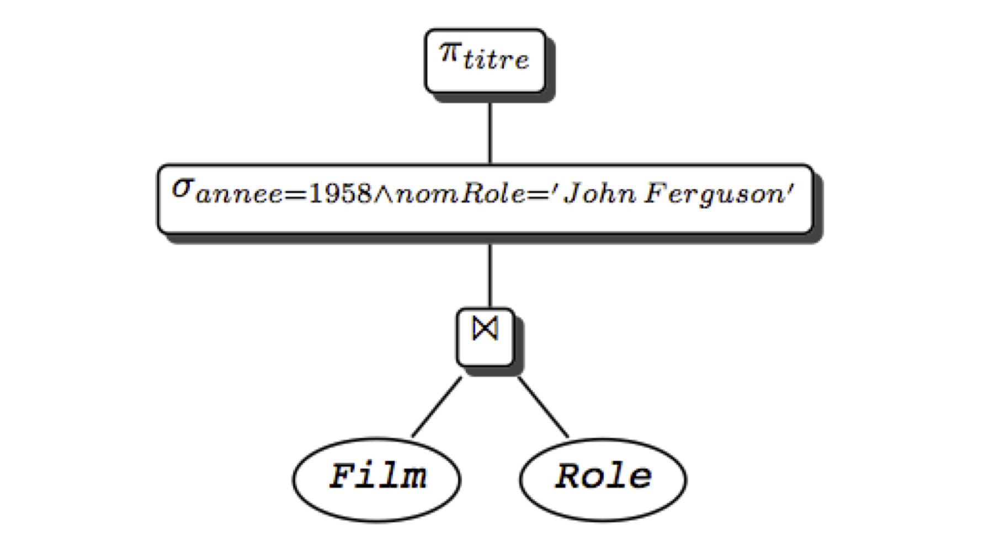
Fig. 7.5 Expression algébrique sous forme arborescente¶
L’interprétation de l’arbre est la suivante. On commence par exécuter les opérations sur les feuilles (ici une jointure); sur le résultat, on effectue les opérations correspondant aux nœuds de plus haut niveau (ici une sélection), et ainsi de suite, jusqu`à ce qu’on obtienne le résultat (ici après la projection). Cette interprétation est bien sûr rendue possible par le fait que tout opérateur prend une table en entrée et produit une table en sortie.
Avec cette représentation de la requête sous une forme « opérationnelle », nous sommes prêts pour la phase d’optimisation.
S3: optimisation de la requête¶
Supports complémentaires:
La réécriture¶
Nous disposons donc d’un plan d’exécution logique (PEL) présentant, sous une forme normalisée (par exemple, les projections, puis les sélections, puis les jointures) les opérations nécessaires à l’exécution d’une requête donnée.
On peut reformuler le PEL grâce à l’existence de propriétés sur les expressions de l’algèbre relationnelle. Ces propriétés appelées lois algébriques ou encore règles de réécriture permettent de transformer l’expression algébrique en une expression équivalente et donc de réagencer l’arbre. Le PEL obtenu est équivalent, c’est-à-dire qu’il conduit au même résultat. En transformant les PEL grâce à ces règles, on peut ainsi obtenir des plans d’exécution alternatifs, et tenter d’évaluer lequel est le meilleur. Voici la liste des règles de réécriture les plus importantes:
Commutativité des jointures.
\[R \Join S \equiv S \Join R\]Associativité des jointures
\[(R \Join S) \Join T \equiv R \Join (S \Join T)\]Regroupement des sélections
\[\sigma_{A='a' \wedge B='b'}(R) \equiv \sigma_{A='a'}(\sigma_{B='b'}(R))\]Commutativité de la sélection et de la projection
\[\pi_{A_1, A_2, ... A_p}(\sigma_{A_i='a} (R)) \equiv \sigma_{A_i='a}(\pi_{A_1, A_2, ... A_p}(R)), i \in \{1,...,p\}\]Commutativité de la sélection et de la jointure
\[\sigma_{A='a'} (R(...A...) \Join S) \equiv \sigma_{A='a'}(R) \Join S\]Distributivité de la sélection sur l’union
\[\sigma_{A='a'} (R \cup S) \equiv \sigma_{A='a'} (R) \cup \sigma_{A='a'} (S)\]Commutativité de la projection et de la jointure
\[\pi_{A_1 ... A_pB_1... B_q} (R \Join_{A_i=B_j} S) \equiv \pi_{A_1 ... A_p}(R) \Join_{A_i=B_j}\pi_{B_1... B_q}(S)\; i \in \{1,..,p\}, j \in \{1,...,q\}\]Distributivité de la projection sur l’union
\[\pi_{A_1A_2...A_p} (R \cup S) \equiv \pi_{A_1A_2...A_p} (R) \cup \pi_{A_1A_2...A_p} (S)\]
Ces règles sont à la base du processus d’optimisation dont
le principe est d’énumérer tous les plans d’exécution possibles.
Par exemple la règle 3 permet
de gérer finement l’affectation des sélections. En effet si la relation est
indexée sur l’atttribut B, la règle justifie de filter sur A
seulement les enregistrements satisfaisant le critère \(B='b'\) obtenus par traversée
d’index. La commutatitivité de la projection avec la sélection et la
jointure (règles 4 et 7) d’une part et de la sélection et de la
jointure d’autre part (règle 5) permettent de faire les sélections et
les projections le plus tôt possible dans le plan (et donc le plus bas possible
dans l’arbre) pour réduire les tailles des relations
manipulées, ce qui est l’idée de base pour le choix d’un
meilleur PEL.
En effet nous avons vu
que l’efficacité des algorithmes implantant les opérations algébriques
est fonction de la taille des relations en entrée. C’est
particulièrement vrai pour la jointure qui est une opération
coûteuse. Quand une séquence comporte une jointure et une sélection,
il est préférable de faire la sélection d’abord: on réduit ainsi la taille
d’une ou des deux relations à joindre, ce qui peut avoir un impact
considérable sur le temps de traitement de la jointure.
Pousser les sélections le plus bas possible dans l’arbre, c’est-à-dire essayer de les appliquer le plus rapidement possible et éliminer par projection les attributs non nécessaires pour obtenir le résultat de la requête sont donc deux heuristiques le plus souvent effectives pour transformer un PEL en un meilleur PEL (équivalent) .
Voici un algorithme simple résumant ces idées:
Séparer les sélections avec plusieurs prédicats en plusieurs sélections à un prédicat (règle 3).
Descendre les sélections le plus bas possible dans l’arbre (règles 4, 5, 6)
Regrouper les sélections sur une même relation (règle 3).
Descendre les projections le plus bas possible (règles 7 et 8).
Regrouper les projections sur une même relation.
Reprenons notre requête cherchant le film paru en 1958 avec un rôle « John Ferguson ». Voici l’expression algébrique complète.
L’expression est correcte, mais probablement pas optimale. Appliquons notre algorithme. La première étape donne l’expression suivante:
On a donc séparé les sélections. Maintenant on les descend dans l’arbre:
Finalement il reste à ajouter des projections pour limiter la taille des enregistrements. À chaque étape du plan, les projections consisteraient (nous ne les montrons pas) à supprimer les attributs inutiles. Pour conclure deux remarques sont nécessaires:
le principe « sélection avant jointure » conduit dans la plupart des cas à un PEL plus efficace; mais il peut arriver (très rarement) que la jointure soit plus réductrice en taille et que la stratégie « jointure d’abord, sélection ensuite », conduise à un meilleur PEL.
cette optimisation du PEL, si elle est nécessaire, est loin d’être suffisante: il faut ensuite choisir le « meilleur » algorithme pour chaque opération du PEL. Ce choix va dépendre des chemins d’accès et des statistiques sur les tables de la base et bien entendu des algorithmes d’évaluation implantés dans le noyau. Le PEL est alors transformé en un plan d’exécution physique du SGBD.
Cette transformation constitue la dernière étape de l’optimisation. Elle fait l’objet de la section suivante.
Plans d’exécution¶
Un plan d’exécution physique (PEP) est un arbre d’opérateurs (on parle d’algèbre physique), issus d’un « catalogue » propre à chaque SGBD. On retrouve, avec des variantes, les principaux opérateurs d’un SGBD à un autre. Nous les avons étudiés dans le chapitre Evaluation et optimisation, et nous les reprenons maintenant pour étudier quelques exemples de plan d’exécution.
On peut distinguer tout d’abord les opérateurs d’accès:
le parcours séquentiel d’une table,
FullScan,le parcours d’index,
IndexScan,l’accès direct à un enregistrement par son adresse,
DirectAccess, nécessairement combiné avec le précédent.
Puis, une second catégorie que nous appellerons opérateurs de manipulation:
la sélection,
Filter;la projection,
Project;le tri,
Sort;la fusion de deux listes,
Merge;la jointure par boucles imbriquées indexées,
IndexedNestedLoop, abrégée eninL.
Cela nous suffira. Nous reprenons notre requête cherchant les films parus en 1958 avec un rôle « John Ferguson ». Pour mémoire, le plan d’exécution logique auquel nous étions parvenu est le suivant.
Nous devons maintenant choisir des opérateurs physiques, choix qui dépend de nombreux facteurs: chemin d’accès, statistiques, nombre de blocs en mémoire centrale. En fonction de ces paramètres, l’optimiseur choisit, pour chaque nœud du PEL, un opérateur physique ou une combinaison d’opérateurs.
Une première difficulté vient du grand nombre de critères à considérer: quelle mémoire allouer, comment la partager entre opérateurs, doit-on privilégier temps de réponse ou temps d’exécution, etc. Une autre difficulté vient du fait que le choix d’un algorithme pour un nœud du PEL peut avoir un impact sur le choix d’un algorithme pour d’autres nœuds (notamment concernant l’utilisation de la mémoire). Tout cela mène à une procédure d’optimisation complexe, mise au point et affinée par les concepteurs de chaque système, dont il est bien difficile (et sans doute peu utile) de connaître les détails. Ce qui suit est donc plutôt une méthodologie générale, illustrée par des exemples.
Prenons comme hypothèse directrice que l’objectif principal de l’optimiseur
soit d’exécuter les jointures avec l’algorithme IndexNestedLoop (ce qui est raisonnable
pour obtenir un bon temps de réponse et limiter la mémoire nécessaire).
Pour chaque jointure, il faut donc envisager les index disponibles. Ici, la jointure
s’effectue entre Film et Rôle, ce dernier étant indexé sur la clé
primaire (id_acteur, id_film). La jointure est commutative (cf. les règles
de réécriture. On peut donc effectuer, de manière équivalente,
ou
\[Rôle \Join_{id\_film=id} Film\]
Regardons pour quelle version nous pouvons utiliser un index avec l’algorithme
IndexNestedLoop. Dans le premier cas, nous lisons des nuplets film (à gauche)
et pour chaque film nous cherchons les rôles (à droite). Peut-on utiliser l’index
sur rôle? Non, pour les raisons déjà expliquées dans la session 1:
l’identifiant du film est un suffixe de la clé de l’arbre B, et ce dernier
est donc inopérant.
Second cas: on lit des rôles (à gauche) et pour chaque rôle on cherche le film. Peut-on utiliser l’index sur film? Oui, bien sûr: on est dans le cas où on lit les nuplets de la table contenant la clé étrangère, et où on peut accéder par la clé primaire à la seconde table (revoir le chapitre Opérateurs et algorithmes pour réviser les algorithmes de jointure si nécessaire). Nos règles de réécriture algébrique nous permettent de reformuler le plan d’exécution logique, en commutant la jointure.
Et, plus important, nous pouvons maintenant implanter ce plan avec l’algorithme de jointures imbriquées indexées, ce qui donne l’arbre de la Fig. 7.6.
{kind=link}
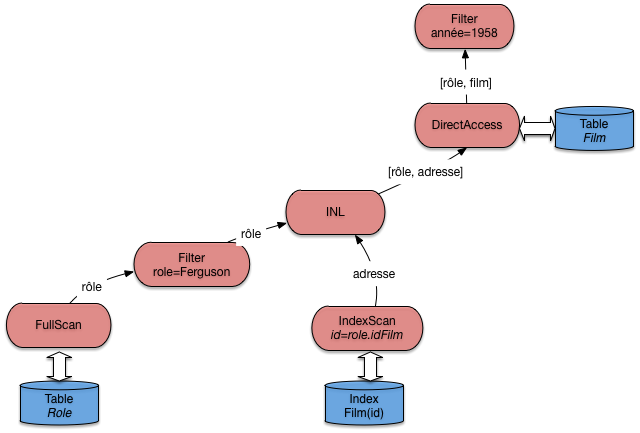
Fig. 7.6 Le plan d’exécution « standard »¶
Note
L’opérateur de projection n’est pas montré sur les figures. Il intervient de manière triviale comme racine du plan d’exécution complet.
Peut-on faire mieux? Oui, en créant des index. La première possibilité est de créer un index
pour éviter un parcours séquentiel de la table gauche. Ici, on peut créer un index sur le nom
du rôle, et remplacer l’opérateur de parcours séquentiel par la combinaison habituelle
(IndexScan + DirectAccess). Cela donne le plan de la Fig. 7.7.
{kind=link}
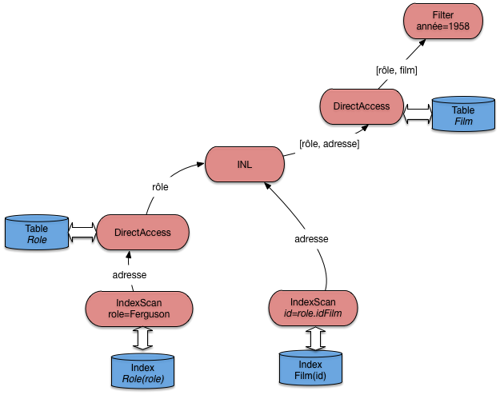
Fig. 7.7 Le plan d’exécution avec deux index¶
Ce plan est certainement le meilleur, du moins si on prend comme critère la minimisation du temps de réponse et de la mémoire utilisée. Cela ne signifie pas qu’il faut créer des index à tort et à travers: la maintenance d’index a un coût, et ne se justifie que pour optimiser des requêtes fréquentes et lentes.
Une autre possiblité pour faire mieux est de créer un index sur la clé étrangère, ce qui ouvre la possibilité d’effectuer les jointures dans n’importe quel ordre (pour les jointures « naturelles », celles qui associent clé primaire et clé étrangère). Certains systèmes (MySQL) le font d’ailleurs systématiquement.
Si, donc, la table Rôle est indexée sur la clé primaire (id_acteur, id_film) et
sur la clé étrangère id_film (ce n’est pas redondant), un plan d’exécution possible est
celui de la Fig. 7.8.
{kind=link}
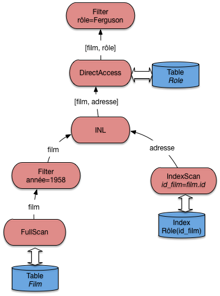
Fig. 7.8 Le plan d’exécution avec index sur les clés étrangères¶
Ce plan est comparable à celui de la Fig. 7.6. Lequel des deux serait choisi par le système? En principe, on choisirait comme table de gauche celle qui contient le moins de nuplets, pour minimiser le nombre de demandes de lectures adressées à l’index. Mais il se peut d’un autre côté que cette table, tout en contenant moins de nuplets, soit beaucoup plus volumineuse et que sa lecture séquentielle soit considérée comme trop pénalisante. Ici, statistiques et évaluation du coût entrent en jeu.
On pourrait finalement créer un index sur l’année sur film pour éviter tout parcours séquentiel: à vous de déterminer le plan d’exécution qui correspond à ce scénario.
Finalement, considérons le cas où aucun index n’est disponible. Pour notre exemple, cela correspondrait à une sévère anomalie puisqu’il manquerait un index sur la clé primaire. Toujours est-il que dans un tel cas le système doit déterminer l’algorithme de jointure sans index qui convient. La Fig. 7.9 illustre le cas où c’est l’agorithme de tri-fusion qui est choisi. La jointure par hachage est une alternative, sans doute préférable d’ailleurs si la mémoire RAM est suffisante.
{kind=link}
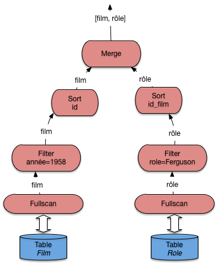
Fig. 7.9 Le plan d’exécution en l’absence d’index¶
La présence de l’algorithme de tri-fusion pour une jointure doit alerter sur l’absence d’index et la probable nécessité d’en créer un.
Arbres en profondeur à gauche¶
Pour conclure cette section sur l’optimisation, on peut généraliser l’approche présentée dans ce qui précède au cas des requêtes multi-jointures, où de plus chaque jointure est « naturelle » et associe la clé primaire d’une table à la clé étrangère de l’autre. Voici un exemple sur notre schéma: on cherche tous les films dans lesquels figure un acteur islandais.
select *
from Film, Rôle, Artiste, Pays
where Pays.nom='Islande'
and Film.id=Rôle.id_film
and Rôle.id_acteur=Artiste.id
and Artiste.pays = Pays.code
Ces requêtes comprenant beaucoup de jointures sont courantes, et le fait qu’elles soient naturelles est également courant, pour des raisons déjà expliquées.
Quel est le plan d’exécution typique? Une stratégie assez standard de l’optimiseur va être d’éviter les opérateurs bloquants et la consommation de mémoire. Cela mène à chercher, le plus systématiquement possible, à appliquer l’opérateur de jointure par boucles imbriquées indexées. Il se trouve que pour les requêtes considérées ici, c’est toujours possible. En fait, on peut représenter ce type de requête par une « chaîne » de jointures naturelles. Ici, on a (en ne considérant pas les sélections):
Il faut lire au moins une des tables séquentiellement pour « amorcer » la cascade des jointures par boucles imbriquées. Mais, pour toutes les autres tables, un accès par index devient possible. Sur notre exemple, le bon ordre des jointures est
Le plan d’exécution consistant en une lecture séquentielle suivi de boucles imbriquées indexées est donné sur la Fig. 7.10. Il reste bien sûr à le compléter. Mais l’aspect important est que ce plan fonctionne entièrement en mode pipelinage, sans latence pour l’application. Il exploite au maximum la possibilité d’utiliser les index, et minimise la taille de la mémoire nécessaire.
{kind=link}
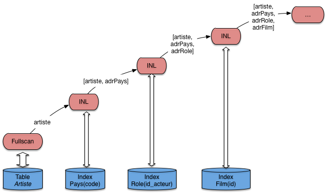
Fig. 7.10 Le plan d’exécution avec algorithme de jointure indexée généralisé¶
Ce plan a la forme caractéristique d’un arbre en profondeur à gauche ( »left-deep tree »). C’est celle qui est recherchée classiquement par un optimiseur, et la forme de base que vous devriez retenir comme point de repère pour étudier un plan d’exécution. En présence d’une requête présentant les caractéristiques d’une chaîne de jointure, c’est la forme de référence, dont on ne devrait dévier que dans des cas explicables par la présence d’index complémentaires, de tables très petites, etc.
Ce plan (le sous-plan de la Fig. 7.10) fournit un nuplet, et autant
d’adresses de nuplets qu’il y a de jointures et donc d’accès aux index. Il faut ensuite
ajouter autant d’opérateurs DirectAccess, ainsi que les opérateurs de sélection nécessaires
(ici sur le nom du pays). Essayez par exemple, à titre d’exercice, de compléter le
plan de la Fig. 7.10 pour qu’il corresponde complètement
à la requête.
Quiz¶
La relation
Rôle(id_acteur, id_film, nom_rôle)a pour clé primaire la paire d’attributs(id_acteur, id_film). Sachant que le système construit un arbre B sur cette clé, laquelle parmi les requêtes suivantes ne peut pas utiliser l’index ?En déduire pourquoi le bon ordre de jointure entre les tables Film et Rôle est celui exposé en cours.
Dans le plan d’exécution de la requête suivante, comment pourrait–on éviter tout parcours séquentiel ?
select titre from Film f, Rôle r, Artiste a where a.nom = 'Stewart' and a.prénom='James' and f.id_film = r.id_film and r.id_acteur = a.idArtiste and f.annee = 1958
S4: illustration avec Oracle¶
Cette section présente l’application concrète des concepts,
structures et algorithmes présentés dans ce qui précède
avec le SGBD Oracle. Ce système est un bon exemple
d’un optimiseur sophistiqué s’appuyant sur des structures
d’index et des algorithmes d’évaluation complets.
Tous les algorithmes de jointure décrits dans ce cours
(boucles imbriquées, tri-fusion, hachage, boucles
imbriquées indexées) sont en effet implantés dans Oracle.
De plus le système propose des outils simples et pratiques
(explain notamment) pour analyser le plan d’exécution choisi
par l’optimiseur, et obtenir des statistiques sur les
performances (coût en E/S et coût CPU, entre autres).
Tous les SGBD relationnel proposent un outil comparable d’explication des plans d’exécution choisis. Les travaux pratique nous permettrons d’utiliser celui d’oracle, mais aussi celui de Postgres.
Note
Pour utiliser Oracle en ligne le site https://apex.oracle.com/en/ est recommandé. Sans installation, et gratuit pour des petites bases.
Paramètres et statistiques¶
L’optimiseur s’appuie sur des paramètres divers et sur des statistiques. Parmi les paramètres les plus intéressants, citons:
OPTIMIZER_MODE: permet d’indiquer si le coût considéré est le temps de réponse (temps pour obtenir la première ligne du résultat),FIRST_ROWou le temps d’exécution totalALL_ROWS.
SORT_AREA_SIZEindique la taille de la mémoire affectée à l’opérateur de tri.
HASH_AREA_SIZEindique la taille de la mémoire affectée à l’opérateur de hachage.
HASH_JOIN_ENABLEDindique que l’optimiseur considère les jointures par hachage.
L’administrateur de la base est responsable
de la tenue à jour des statistiques.
Pour analyser une table on utilise la commande analyze table
qui produit la taille de la
table (nombre de lignes) et le nombre
de blocs utilisés. Cette information est utile
par exemple au moment d’une jointure pour
utiliser comme table externe la plus petite des deux.
Voici un exemple de la commande.
analyze table Film compute statistics for table;
On trouve alors des informations statistiques
dans les vues dba_tables, all_tables, user_tables. Par exemple:
NUM_ROWS, le nombre de lignes.
BLOCKS, le nombre de blocs.
CHAin_CNT, le nombre de blocs chaînés.
AVG_ROW_LEN, la taille moyenne d’une ligne.
On peut également analyser les index d’une table, ou un index en particulier. Voici les deux commandes correspondantes.
analyze table Film compute statistics for all indexes;
analyze index PKFilm compute statistics;
Les informations statistiques sont placées dans les vues
dba_index, all_index et user_indexes.
Pour finir on peut calculer des statistiques sur
des colonnes. Oracle utilise des histogrammes en hauteur
pour représenter
la distribution des valeurs d’un champ.
Il est évidemment inutile d’analyser toutes les colonnes. Il faut
se contenter des colonnes qui ne sont pas des clés uniques,
et qui sont indexées. Voici un exemple
de la commande d’analyse pour créer des histogrammes
avec vingt groupes sur les colonnes titre
et genre.
analyze table Film compute statistics for columns titre, genre size 20;
On peut remplacer compute par estimate pour
limiter le coût de l’analyse. Oracle prend alors un échantillon
de la table, en principe représentatif (on sait ce que valent les sondages!).
Les informations sont stockées
dans les vues dba_tab_col_statistics et
dba_part_col_statistics.
Plans d’exécution Oracle¶
Nous en arrivons maintenant à la présentation des plans
d’exécution d’Oracle, tels qu’ils sont donnés par l’utilitaire explain.
Ces plans ont classiquement la forme d’arbres en
profondeur à gauche (voir la section précédente), chaque nœud étant un opérateur,
les nœuds-feuille représentant les accès aux
structures de la base, tables, index, cluster, etc.
Le vocabulaire de l’optimiseur pour désigner les opérateurs est un peu différent de celui utilisé jusqu’ici dans ce chapitre. La liste ci-dessous donne les principaux, en commençant par les chemins d’accès, puis les algorithmes de jointure, et enfin des opérations diverses de manipulation d’enregistrements.
FULL TABLE SCAN, notre opérateurFullScan.
ACCESS BY ROWID, notre opérateurDirectAccess.
INDEX SCAN, notre opérateurIndexScan.
NESTED LOOP, notre opérateurinLde boucles imbriquées indexées, utilisé quand il y a au moins un index.
SORT/MERGE, algorithme de tri-fusion.
HASH JOIN, jointure par hachage.
inTERSECTION, intersection de deux ensembles d’enregistrements.
CONCATENATION, union de deux ensembles.
FILTER, élimination d’enregistrements (utilisé dans un négation).
select, opération de projection (et oui …).
Voici un petit échantillon de requêtes sur notre base
en donnant à chaque fois le plan
d’exécution choisi par Oracle. Les plans sont obtenus
en préfixant la requête à analyser par explain plan
accompagné de l’identifiant à donner au plan d’exécution. La
description du plan d’exécution est alors stockée dans une table utilitaire et
le plan peut être affiché de différentes manières. Nous donnons
la représentation la plus courante, dans laquelle l’arborescence
est codée par l’indentation des lignes.
La première requête est une sélection sur un attribut non indexé.
explain plan
set statement_id='SelSansInd' for
select *
from Film
where titre = 'Vertigo'
On obtient le plan d’exécution nommé SelSansInd dont l’affichage est donné ci-dessous.
0 SELECT STATEMENT
1 TABLE ACCESS FULL FILM
Oracle effectue donc un balayage complet de la table Film.
L’affichage représente l’arborescence du plan d’exécution par une
indentation. Pour plus de clarté, nous donnons également l’arbre
complet (Fig. 7.11) avec les conventions utilisées
jusqu’à présent.
{kind=link}
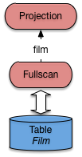
Fig. 7.11 Plan Oracle pour une requête sans index¶
Le plan est trivial.
L’opérateur de parcours séquentiel extrait un à un les enregistrements
de la table Film. Un filtre (jamais montré dans les plans
donnés par explain, car intégré aux opérateurs d’accès aux données)
élimine tous ceux dont le titre n’est pas Vertigo. Pour ceux
qui passent le filtre, un opérateur de projection (malencontreusement
nommé select dans Oracle …) ne conserve que les champs non
désirés.
Voici maintenant une sélection avec index sur la table
Film.
explain plan
set statement_id='SelInd' for
select *
from Film
where id=21;
Le plan d’exécution obtenu est:
0 SELECT STATEMENT
1 TABLE ACCESS BY ROWID FILM
2 INDEX UNIQUE SCAN IDX-FILM-ID
L’optimiseur a détecté la présence d’un index unique sur la table
Film. La traversée de cet index donne un ROWID
qui est ensuite utilisé pour un accès direct à
la table (Fig. 7.12).
{kind=link}
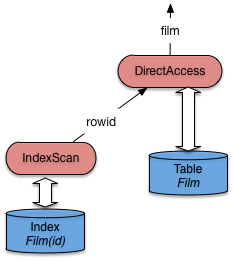
Fig. 7.12 Plan Oracle pour une requête avec index¶
Passons maintenant aux jointures. La requête donne
les titres des films avec les nom et prénom
de leur metteur en scène, ce qui implique
une jointure entre Film et Artiste.
explain plan
set statement_id='JoinIndex' for
select titre, nom, prénom
from Film f, Artiste a
where f.id_realisateur = a.id;
Le plan d’exécution obtenu est le suivant: il s’agit d’une jointure par boucles imbriquées indexées.
0 SELECT STATEMENT
1 NESTED LOOPS
2 TABLE ACCESS FULL FILM
3 TABLE ACCESS BY ROWID ARTISTE
4 INDEX UNIQUE SCAN IDXARTISTE
Vous devriez pour décrypter ce plan est le reconnaître: c’est celui, discuté assez longuement déjà, de la jointure imbriquée indexée. Pour mémoire, il correspond à la figure suivante, très proche de celle du chapitre Opérateurs et algorithmes.
{kind=link}
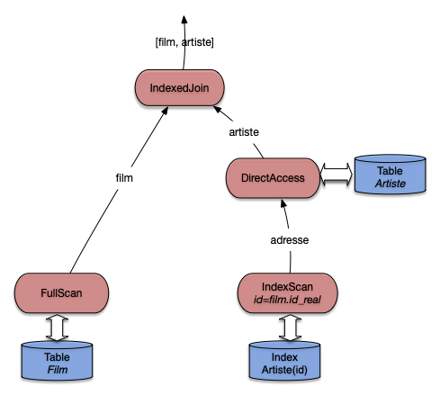
Fig. 7.13 Plan Oracle pour une requête avec index¶
Ré-expliquons une nouvelle fois. Tout d’abord
la table qui n’est pas indexée sur l’attribut
de jointure (ici, Film) est parcourue
séquentiellement. Le nœud IndexJoin (appelé NESTED LOOPS par Oracle)
récupère les enregistrements film un par
un du côté gauche. Pour chaque film on va
alors récupérer l’artiste correspondant avec
le sous-arbre du côté droit.
On effectue alors une recherche par clé dans l’index avec
la valeur id_realisateur provenant du film courant. La recherche
renvoie un ROWID qui est utilisé pour
prendre l’enregistrement complet dans la table Artiste. Le nœud
de jointure récupère cet enregistrement et l’associe au film.
Note
Par rapport à la version de cet algorithme présenté précédemment,
ORACLE choisit d’effectuer le DirectAccess immédiatement après le
parcours d’index (alors que nous avons montré une version où il avait lieu
après la jointure). Cela reste fondamentalement le même algorithme.
Dans certains cas on peut éviter le parcours séquentiel à
gauche de la jointure par boucles imbriquées, si une sélection
supplémentaire sur un attribut indexé est exprimée. L’exemple
ci-dessous sélectionne tous les rôles jouées par Al Pacino, et suppose
qu’il existe un index sur les noms des artistes qui permet
d’optimiser la recherche par nom. L’index sur la
table Rôle est la concaténation des
champs id_acteur et id_film, ce qui
permet de faire une recherche par intervalle
sur le préfixe constitué seulement de id_acteur.
La requête est donnée ci-dessous.
explain plan
set statement_id='JoinSelIndex' for
select nom_rôle
from Rôle r, Artiste a
where r.id_acteur = a.id
and nom = 'Pacino';
Et voici le plan d’exécution.
0 SELECT STATEMENT
1 NESTED LOOPS
2 TABLE ACCESS BY ROWID ARTISTE
3 INDEX RANGE SCAN IDX-NOM
4 TABLE ACCESS BY ROWID ROLE
5 INDEX RANGE SCAN IDX-ROLE
Notez bien que les deux recherches dans les index s’effectuent
par intervalle (INDEX RANGE), et peuvent donc ramener plusieurs ROWID.
Dans les deux cas on utilise en effet seulement une
partie des champs définissant l’index (et cette partie
constitue un préfixe, ce qui est impératif).
On peut donc envisager de trouver plusieurs
artistes nommé Pacino (avec des prénoms différents),
et pour un artiste, on peut trouver plusieurs rôles
(mais pas pour le même film). Tout cela résulte de la
conception de la base.
{kind=link}
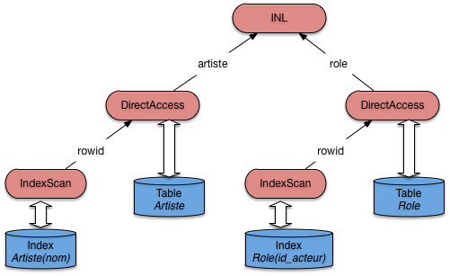
Fig. 7.14 Plan Oracle pour une jointure et sélection avec index¶
Pour finir voici une requête sans index. On veut trouver
tous les artistes nés l’année de parution de Vertigo
(et pourquoi pas?). La requête est donnée ci-dessous:
elle effectue une jointure sur les années de parution
des films et l’année de naissance des artistes.
explain plan set
statement_id='JoinSansIndex' for
select nom, prénom
from Film f, Artiste a
where f.annee = a.annee_naissance
and titre = 'Vertigo';
Comme il n’existe pas d’index sur ces champs, Oracle applique un algorithme de tri-fusion, et on obtient le plan d’exécution suivant.
0 SELECT STATEMENT
1 MERGE JOIN
2 SORT JOIN
3 TABLE ACCESS FULL ARTISTE
4 SORT JOIN
5 TABLE ACCESS FULL FILM
L’arbre de la Fig. 7.15 montre
bien les deux tris, suivis de la fusion. Au moment du
parcours séquentiel, on va filtrer tous les films
dont le titre n’est pas Vertigo, ce qui va
certainement beaucoup simplifier le calcul de ce côté-là.
En revanche le tri des artistes risque d’être beaucoup
plus coûteux.
{kind=link}
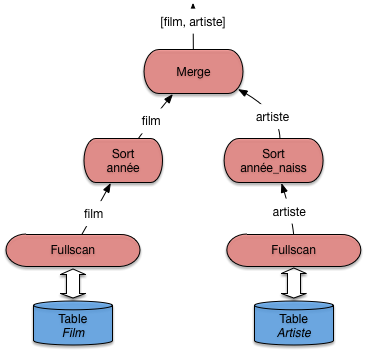
Fig. 7.15 Plan Oracle pour une jointure sans index¶
Dans un cas comme celui-là, on peut envisager de créer un index sur les années de parution ou sur les années de naissance. Un seul index suffira, puisqu’il devient alors possible d’effectuer une jointure par boucles imbriquées.
Outre l’absence d’index, il existe de nombreuses
raisons pour qu’Oracle ne puisse pas utiliser un index:
par exemple quand on applique une fonction au moment
de la comparaison. Il faut être attentif à ce genre
de détail, et utiliser explain pour vérifier
le plan d’exécution quand une requête s’exécute sur un temps
anormalement long.
Exercices¶
Les exercices sont essentiellement des études de plan d’exécution, pour lesquels nous utilisons la syntaxe expliquée dans le contexte d’Oracle. Vous pouvez également produire des diagrammes assez facilement avec https://www.lucidchart.com si vous préférez.
Exercice ex-planex1: définir des plans d’exécution
Donner le meilleur plan d’exécution pour les requêtes suivantes, en supposant qu’il existe un index sur la clé primaire de la table
idFilm. Essayez d’identifier les requêtes qui peuvent s’évaluer uniquement avec l’index. Inversement, identifier celles pour lesquelles l’index est inutile.select * from Film where idFilm = 20 and titre = 'Vertigo'; select * from Film where idFilm = 20 or titre = 'Vertigo'; select COUNT(*) from Film; select MAX(idFilm) from Film;
Exercice ex-planex2: encore des plans d’exécution
Soit le schéma relationnel :
Journaliste (jid, nom, prénom)
Journal (titre, rédaction, id_rédacteur)
La table
Journalistestocke les informations (nom, prénom) sur les journalistes (jidest le numéro d’identification du journaliste). La tableJournalstocke pour chaque rédaction d’un journal le titre du journal (titre), le nom de la rédaction (rédaction) et l’id de son rédacteur (id_rédacteur). . On a un arbre B dense sur la tableJournalistesur l’attributjid, et un index sur la titre du journal.On considère la requête suivante:
select nom from Journal, Journaliste where titre='Le Monde' and jid=id_redacteur and prénom='Jean'Questions:
Voici deux expressions algébriques:
\[\pi_{nom}(\sigma_{titre='Le\,Monde' \land prenom='Jean'}(Journaliste \Join_{jid=id\_redacteur} Journal))\]et
\[\pi_{nom}(\sigma_{prenom='Jean'}(Journaliste) \Join_{jid=id\_redacteur} \sigma_{titre='Le\,Monde'}(Journal))\]Les deux expressions retournent-elles le même résultat (sont-elles équivalentes)? Justifiez votre réponse en indiquant les règles de réécriture que l’on peut appliquer.
Une expression vous semble-t-elle meilleure que l’autre si on les considère comme des plans d’exécution?
Donner le plan d’exécution physique qui vous semble le meilleur, utilisant les index autant que possible, sous forme arborescente ou sous forme d’une expression EXPLAin, et expliquez en détail ce plan.
Exercice ex-planex3: toujours des plans d’exécution
Soit la base d’une société d’informatique décrivant les clients, les logiciels vendus, et les licences indiquant qu’un client a acquis un logiciel.
Société (id, intitulé)
Logiciel (id, nom)
Licence (idLogiciel, idSociété, durée)
Bien entendu un index unique est créé sur les clés primaires. Pour chacune des requêtes suivantes, donner le plan d’exécution qui vous semble le meilleur.
select intitulé from Société, Licence where durée = 15 and id = idSociete; select intitule from Société, Licence, Logiciel where nom='EKIP' and Société.id = idSociete and Logiciel.id = idLogiciel; select intitule from Société, Licence where Société.id = idSociete and idLogiciel in (select id from Logiciel where nom='EKIP') select intitule from Société s, Licence c where s.id = c.idSociete and exists (select * from Logiciel l where nom='EKIP' and c.idLogiciel=l.idLogiciel)
Exercice ex-optim1: plans d’exécution Oracle
On prend les tables suivantes, abondamment utilisées par Oracle dans sa documentation:
Emp (empno, ename, sal, mgr, deptno)
Dept (deptno, dname, loc)La table
Empstocke des employés, la tableDeptstocke les départements d’une entreprise. La requête suivante affiche le nom des employés dont le salaire est égal à 10000, et celui de leur département.select e.ename, d.dname from emp e, dept d where e.deptno = d.deptno and e.sal = 10000Voici des plans d’exécution donnés par Oracle, qui varient en fonction de l’existence ou non de certains index. Dans chaque cas expliquez ce plan.
Index sur
Dept(deptno)et surEmp(Sal).0 SELECT STATEMENT 1 NESTED LOOPS 2 TABLE ACCESS BY ROWID EMP 3 INDEX RANGE SCAN EMP_SAL 4 TABLE ACCESS BY ROWID DEPT 5 INDEX UNIQUE SCAN DEPT_DNOIndex sur
Emp(sal)seulement.0 SELECT STATEMENT 1 NESTED LOOPS 2 TABLE ACCESS FULL DEPT 3 TABLE ACCESS BY ROWID EMP 4 INDEX RANGE SCAN EMP_SAL
Index sur
Emp(deptno)et surEmp(sal).0 SELECT STATEMENT 1 NESTED LOOPS 2 TABLE ACCESS FULL DEPT 3 TABLE ACCESS BY ROWID EMP 4 and-EQUAL 5 INDEX RANGE SCAN EMP_DNO 6 INDEX RANGE SCAN EMP_SAL
Voici une requête légèrement différente.
select e.ename from emp e, dept d where e.deptno = d.deptno and d.loc = 'Paris'On suppose qu’il n’y a pas d’index. Voici le plan donné par Oracle.
0 SELECT STATEMENT 1 MERGE JOIN 2 SORT JOIN 3 TABLE ACCESS FULL DEPT 4 SORT JOIN 5 TABLE ACCESS FULL EMPIndiquer quel(s) index on peut créer pour obtenir de meilleures performances (donner le plan d’exécution correspondant).
Que pensez-vous de la requête suivante par rapport à la précédente?
select e.ename from emp e where e.deptno in (select d.deptno from Dept d where d.loc = 'Paris')Voici le plan d’exécution donné par Oracle,:
0 SELECT STATEMENT 1 MERGE JOIN 2 SORT JOIN 3 TABLE ACCESS FULL EMP 4 SORT JOIN 5 VIEW 6 SORT UNIQUE 7 TABLE ACCESS FULL DEPTQu’en dites vous?
Sur le même schéma, voici maintenant la requête suivante.
select * from Emp e1 where sal in (select salL from Emp e2 where e2.empno=e1.mgr)Cette requête cherche les employés dont le salaire est égal à celui de leur patron. On donne le plan d’exécution avec Oracle (outil EXPLAin) pour cette requête dans deux cas: (i) pas d’index, (ii) un index sur le salaire et un index sur le numéro d’employé.
Expliquez dans les deux cas ce plan d’exécution (éventuellement en vous aidant d’une représentation arborescente de ce plan d’exécution).
Pas d’index.
0 FILTER 1 TABLE ACCESS FULL EMP 2 TABLE ACCESS FULL EMPIndex sur
empnoet index sursal.0 FILTER 1 TABLE ACCESS FULL EMP 2 and-EQUAL 3 INDEX RANGE SCAN I-EMPNO 4 INDEX RANGE SCAN I-SAL
Dans le cas où il y a les deux index (salaire et numéro d’employé), on a le plan d’exécution suivant:
0 FILTER 1 TABLE ACCESS FULL EMP 2 TABLE ACCESS ROWID EMP 3 INDEX RANGE SCAN I-EMPNOExpliquez-le.
Exercice ex-optim2: encore des plans d’exécution Oracle
Soit le schéma d’une base, et une requête
create table TGV ( NumTGV integer, NomTGV varchar(32), GareTerm varchar(32)); create table Arret ( NumTGV integer, NumArr integer, GareArr varchar(32), HeureArr varchar(32)); select NomTGV from TGV, Arret where TGV.NumTGV = Arret.NumTGV and GareTerm = 'Aix';Voici le plan d’exécution obtenu:
0 SELECT STATEMENT 1 MERGE JOIN 2 SORT JOIN 3 TABLE ACCESS FULL ARRET 4 SORT JOIN 5 TABLE ACCESS FULL TGV
Que calcule la requête?
Que pouvez-vous dire sur l’existence d’index pour les tables
TGVetArret? Décrivez en détail le plan d’exécution: quel algorithme de jointure a été choisi, quelles opérations sont effectuées et dans quel ordre?On fait la création d’index suivante:
CREATE INDEX index arret_numtgv ON Arret(numtgv);L’index créé est-il dense? unique? Quel est le plan d’exécution choisi par Oracle? Vous pouvez donner le plan avec la syntaxe ou sous forme arborescente. Expliquez en détail le plan choisi.
On ajoute encore un index:
CREATE INDEX tgv_gareterm on tgv(gareterm);Quel est le plan d’exécution choisi par Oracle? Expliquez le en détail.

Ce cours de Philippe Rigaux est mis à disposition selon les termes de la licence Creative Commons Attribution - Pas d’Utilisation Commerciale - Partage dans les Mêmes Conditions 4.0 International.
Table Of Contents
- 1. Introduction
- 2. Dispositifs de stockage
- 3. Structures d’index: l’arbre B
- 4. Structures d’index: le hachage
- 5. Moteurs de stockage
- 6. Opérateurs et algorithmes
- 7. Evaluation et optimisation
- 8. Travaux pratiques: optimisation
- 9. Transactions
- 10. Contrôle de concurrence
- 11. Reprise sur panne
- 12. Annales des examens
Recherche
Saisissez un ou plusieurs mots-clés.